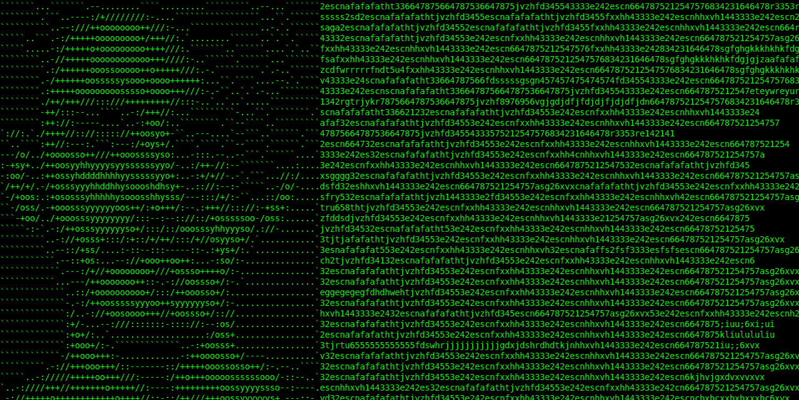

RaihanNilambur
Qualifications
MCA
BSC CS
SSLC
Favorite sites
Instagram
GitHub
LinkedIn
Scrolling message
Pondicherry University, also known as PU, is a collegiate public central university located in Kalapet, Pondicherry, Union Territory of Puducherry, India. It was established by an Act of Parliament in 1985 by the Department of Higher Education, Ministry of Education, Government of India.Pondicherry University, also known as PU, is a collegiate public central university located in Kalapet, Pondicherry, Union Territory of Puducherry, India. It was established by an Act of Parliament in 1985 by the Department of Higher Education, Ministry of Education, Government of India.
Registration opened!
